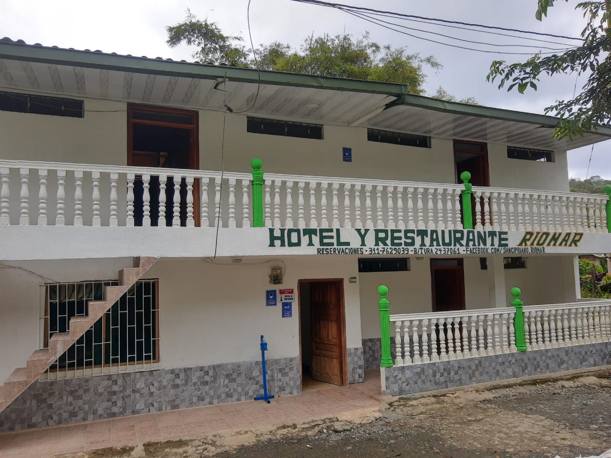
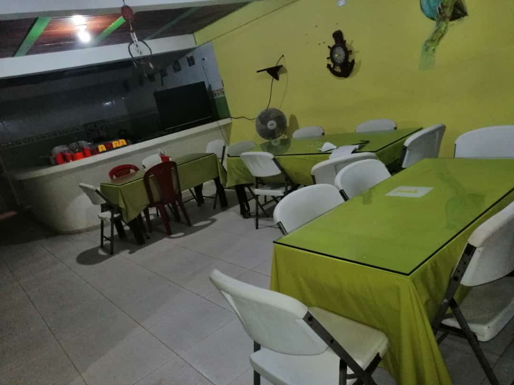

Restaurante Rio-Mar
El Restaurante Rio-Mar es un establecimiento ubicado en San Cipriano que presta sus servicios a todos los turistas nativos y foraneos.. tiene una variedad de platos tipicos de la region para todos los gustos. ven y disfruta de un delicioso desayuno, almuerzo o cena al mejor estilo del pacifico.
contacto: 311 762 9039
Restaurante ivankar
IVANKAR es un Restaurante que tambien presta sus servicios de alojamiento a todos aquellos que dessen visitar la reserva de san cipriano, cuenta uan amplia gama de platos, con los mejores precios de la zona.
contacto: 313 618 7113